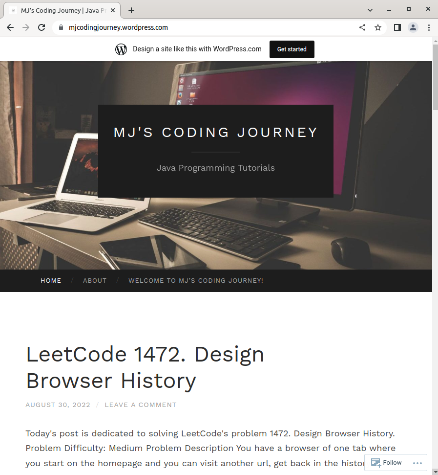
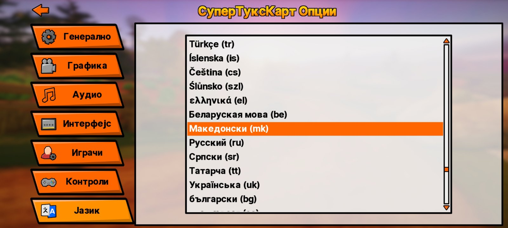

Hello there!
I am Marija, a Computer Engineering student passionate about new technology, programming, open-source and cybersecurity topics. I enjoy learning new concepts and getting hands-on experience.
Programming Blog Engineering consists of a lifelong learning process and sharing the acquired knowledge with the rest of the community. As a way of contributing to the community, I decided to create my own programming blog also known as MJ's Coding Journey . My blog contains different posts dedicated to solving different programming problems mostly taken from the popular platform called LeetCode. Structurally, each post begins with a problem description which explains the problem's requirements. The next part is the solution logic where I explain step by step the logic that I will use for writing the code. Finally, the last part is the actual code implementation. For more information regarding the blog, you may click the following link

Click on the image to visit the programming blog.
Open Source Contributions Another interesting thing about me is that I enjoy contributing to the open-source community. As a child I grew up playing an open-source kart racing game called SuperTuxKart . The characters that are used are the mascots of other open-source projects such as Tux (Linux kernel), Thunderbird (for Mozilla Thunderbird), Wilber (GIMP), Puffy (OpenBSD) and many more. For me, this game was more than just a game. It was an eye opener for all the cool technology out there and one of the reasons for my passion in computers. As a sign of gratitude, I decided to contribute to it by fully translating the game from English into Macedonian. The Macedonian language is officially available in the game and I hope this will be of great help to people who speak Macedonian and want to try out the game without having to face language barrier problems. For more information regarding the game you may visit the official SuperTuxKart website

Click on the image to visit the official SuperTuxKart website.